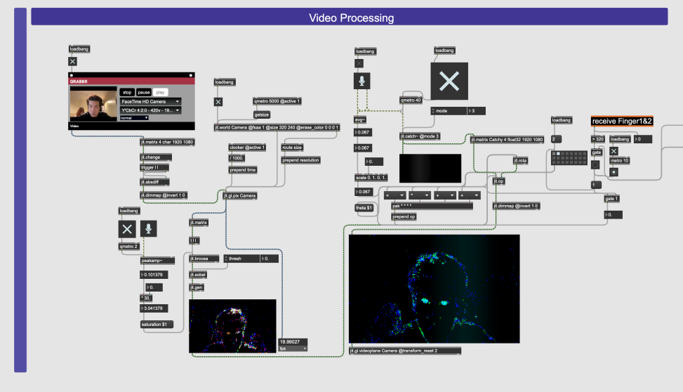
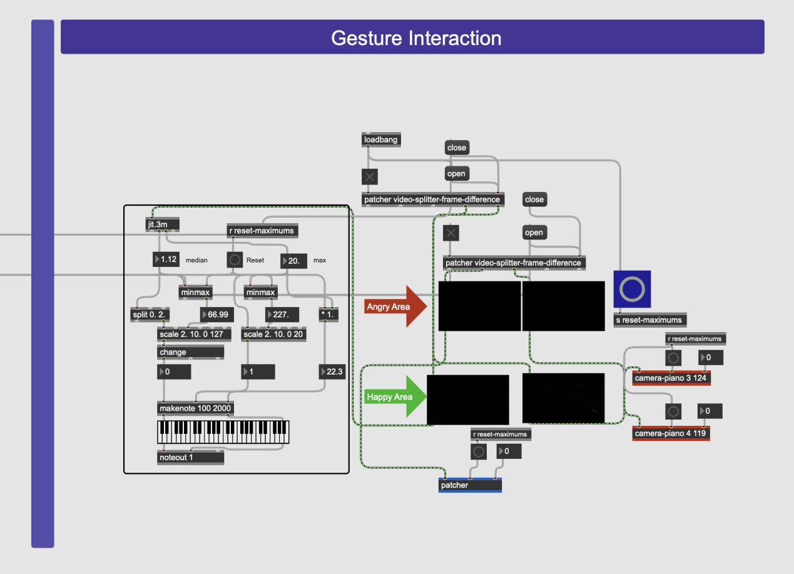
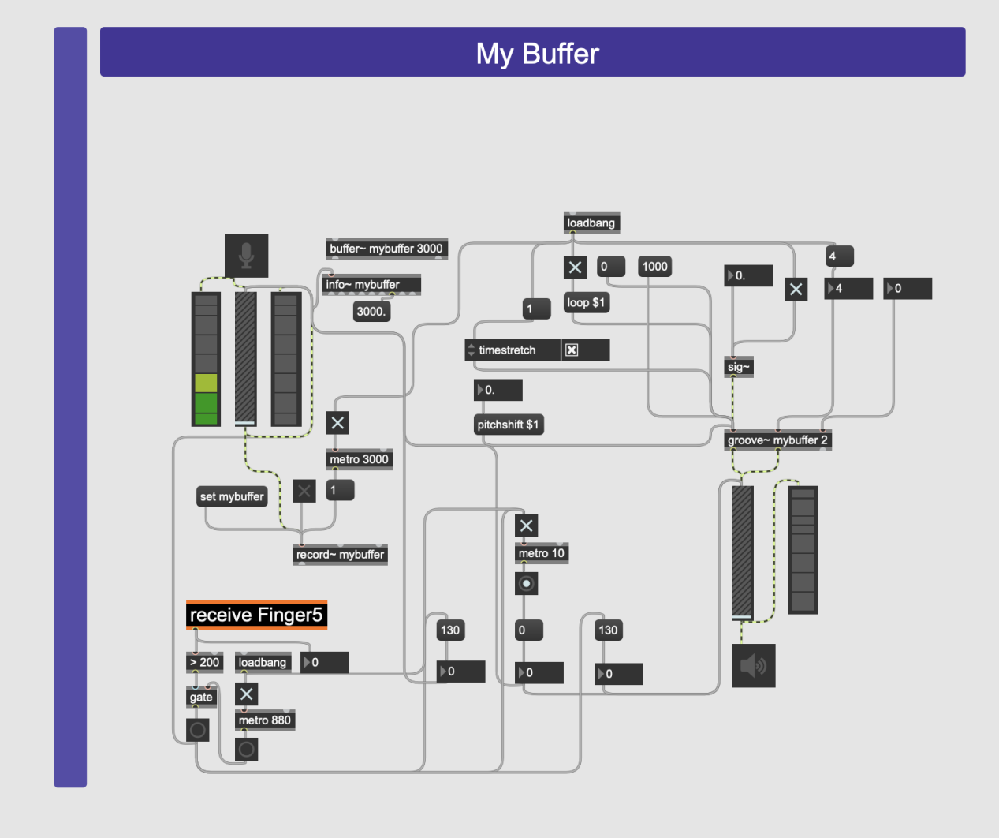
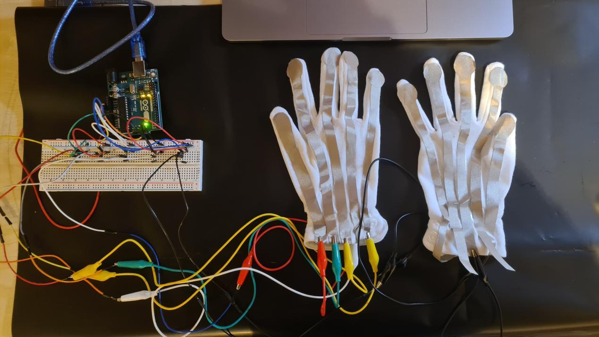

简介
情绪手套是一个可以为用户带来沉浸式体验的一个项目，包括视觉、听觉和触觉三种感官。通过这个项目，我希望展示如何利用计算机技术创造能够影响人类情感的沉浸式体验。我相信，通过将不同的感官体验结合起来，可以为用户创造出更吸引人、更难忘的体验。
技术实施




该项目分为两个部分，第一部分侧重于放松和快乐，第二部分则是愤怒和激动。我利用运动检测来创建与现场声音互动的生成图像，而手势互动则分为 "快乐 "和 "愤怒 "两个区域，对用户的动作做出不同的反应。此外，该项目还包括一个用于录制用户声音的 Buffer 部分和一个使用 jit.matrix 和 kslider 生成音频的背景音乐部分。该项目还包括随机播放预设音频的随机音乐部分，以及允许从手套设备实时输入数据的 Arduino to Max 部分。
工具
Max/Msp, Arduino